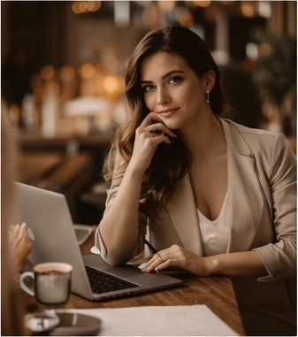

Calm direction
Great photographers help people relax, move with confidence, and stay present without feeling over-posed.

I give gentle direction when needed, plenty of room for real moments to unfold, and a polished final gallery that feels both natural and beautifully finished.
Use this section to highlight what actually matters to the client: how the day will feel, how they will be guided, and why the final images will still matter years from now.
Great photographers help people relax, move with confidence, and stay present without feeling over-posed.
A premium gallery feels unified from start to finish. Every image should belong to the same story and same visual world.
People remember the communication, the confidence, and the professionalism just as much as they remember the photographs.